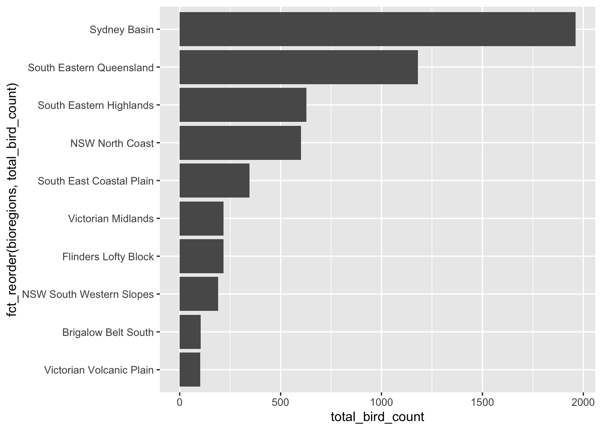

The echo: false option disables the printing of code (only output is displayed).
Abstract
This document will focus on bird baths data set.
In a study called “The Bathing Birds Study” started in 2014 titled, they collected data of bird occurrence at bird baths. This bird baths are popular sight in Australian garden. The goal of the scientists and this study is to understand the role of this bird baths in the life of the birds
Introduction:
The research on birdbath was done by collecting data online from 2,500 citizen scientists on bathing bird all over Australia. From the data collected, we can hypothesize that the birdbaths located in areas with latitude, and land that has diversity, water would have more birds
Question to ask about the data.
What is the bird_count per survey_year
What is the survey_year in the urban_rural
What is the most predominent region that had most bird_count
Rows: 161057 Columns: 5
── Column specification ────────────────────────────────────────────────────────
Delimiter: ","
chr (3): urban_rural, bioregions, bird_type
dbl (2): survey_year, bird_count
ℹ Use `spec()` to retrieve the full column specification for this data.
ℹ Specify the column types or set `show_col_types = FALSE` to quiet this message.
Before answering the question asked about data, we will load some datas that can be used later on while answering the questions above.
Birth_baths data summary:
In the data below the code summarize(bird_baths) would be used to load a summary of the data which include bioregions, survey_year, urban_rural, bird_type and bird_count.
bird_baths %>%summarise(bird_baths)
# A tibble: 161,057 × 5
survey_year urban_rural bioregions bird_type bird_…¹
<dbl> <chr> <chr> <chr> <dbl>
1 2014 Urban South Eastern Queensland Bassian Thrush 0
2 2014 Urban South Eastern Queensland Chestnut-breasted M… 0
3 2014 Urban South Eastern Queensland Wild Duck 0
4 2014 Urban South Eastern Queensland Willie Wagtail 0
5 2014 Urban South Eastern Queensland Regent Bowerbird 0
6 2014 Urban South Eastern Queensland Rufous Fantail 0
7 2014 Urban South Eastern Queensland Spiny-cheeked Honey… 0
8 2014 Urban South Eastern Queensland Flame Robin 0
9 2014 Urban South Eastern Queensland European Goldfinch 0
10 2014 Urban South Eastern Queensland Noisy Friarbird 0
# … with 161,047 more rows, and abbreviated variable name ¹bird_count
Bird_type data summary
In order to find the bird types in this data, we loaded the code count(bird_type) which gave a count of different type of birds that were found in the bird_baths=sum(bird_count)).
bird_baths %>%count(bird_type)
# A tibble: 169 × 2
bird_type n
<chr> <int>
1 Apostlebird 953
2 Australasian Figbird 953
3 Australian Brush-turkey 953
4 Australian King-parrot 953
5 Australian Magpie 953
6 Australian Raven 953
7 Australian Ringneck 953
8 Australian White Ibis 953
9 Bar-shouldered Dove 953
10 Bassian Thrush 953
# … with 159 more rows
Answers to questions
Below we will answer the question asked about through the use of different code. The first code we will use will give us a count values of the survey year, the cote used is count(survey_year), then we will populate the data for bird_count per survey year by using the code group_by%>%, then summarise(total_bird_count=sum_bird_count). Lastly, we populated a data demonstrating the data between survey year and urban rural.
1- Summary of survey_year
bird_baths %>%count(survey_year)
# A tibble: 3 × 2
survey_year n
<dbl> <int>
1 2014 88894
2 2015 71994
3 NA 169
# A tibble: 11 × 2
bioregions total_bird_count
<chr> <dbl>
1 Brigalow Belt South 103
2 Flinders Lofty Block 216
3 NSW North Coast 602
4 NSW South Western Slopes 191
5 South East Coastal Plain 345
6 South Eastern Highlands 628
7 South Eastern Queensland 1180
8 Sydney Basin 1962
9 Victorian Midlands 217
10 Victorian Volcanic Plain 101
11 <NA> 5545
What is the most predominant region that had most bird count
bird_baths %>%group_by(bioregions) %>%summarise(total_bird_count=sum(bird_count)) %>%filter(!is.na(bioregions)) %>%ggplot() +geom_bar(aes(x=fct_reorder (bioregions, total_bird_count), y = total_bird_count), stat ="identity") +coord_flip()

Conclusion:
Birdbath are small basin made for birds, this birdbaths are use by the birds to hydrate and and to bath in. In the data above we can see that Sydney Basin has more birds than any other places. Sydney Basin is located in the eastern area of Australia, and has great mountain, close to the sea. We hypothesize that area witch latitude which as mountain, and that have land diversity, and water would have more birdbaths. This has been proven right because The closer the area is to mountain or the more latitude a place has the more birds we have such as in Sydney Basin, NSW North Coast. On the other hand, Victorian Volcanic Plain, is mainly full of grass, it is a place that gets really warm during the summer and doesn’t have a lot of water sources near by like the other places, which explain which they are such a low count of birds in that area.
In conclusion, we can say that birds do prefer area such as Sydney basin or area closer to the sea, that has land diversity and latitude because it is colder there specially during the summer.